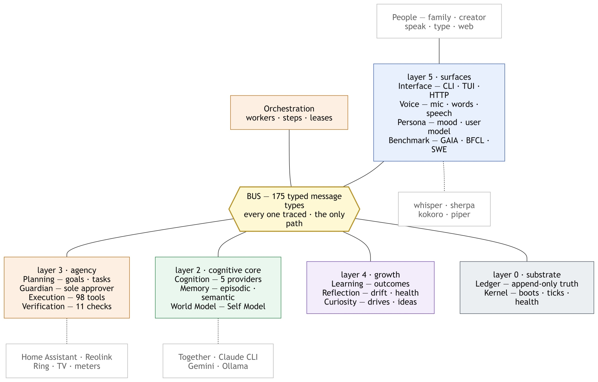
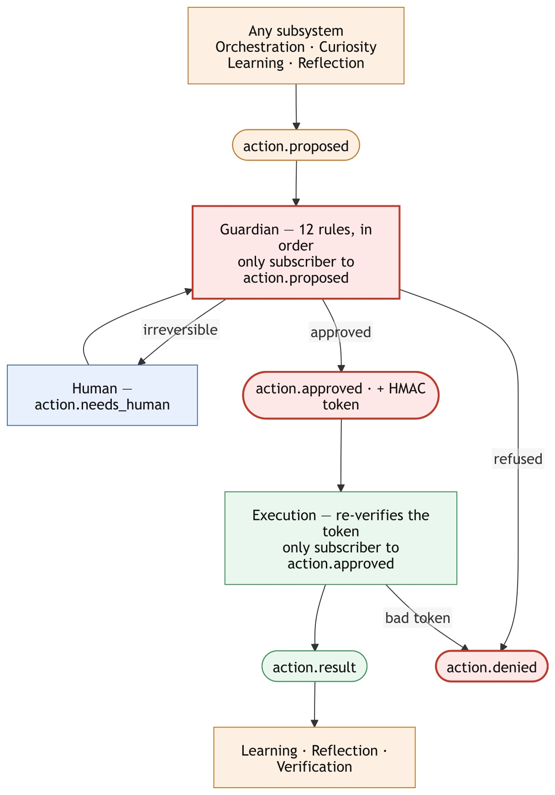
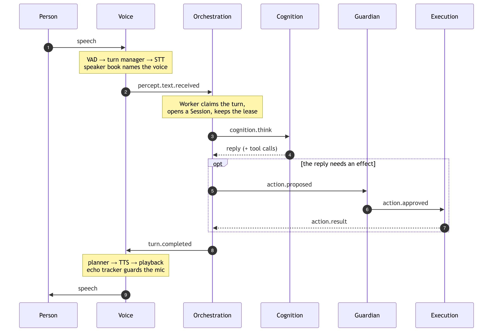
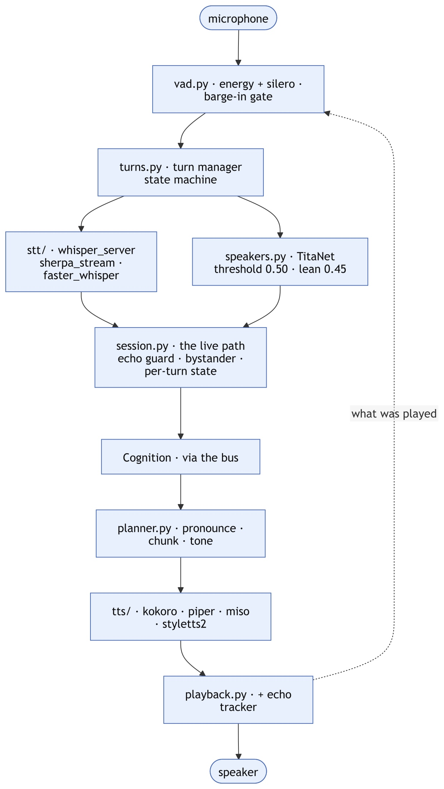

System architecture and building blocks · 2026-09-18
One package each, plus one shared dependency they all import.
Across 382 files, with 90,203 lines of tests in 447 files.
174 checked-in JSON schemas. Nothing calls anything directly.
Layers, edges and sizes measured on 2026-09-18, not copied from the design docs.
Press → to advance · companion document: docs/module-map.md
Each coloured block is one layer; the modules inside it are separate packages.

Boot order is the layer order — a layer waits for the one below it to report healthy.
Bus routes typed, traced messages. Ledger is append-only truth — every projection can be rebuilt from it. Kernel boots the layers, ticks the clock, owns stop.
Cognition routes across 5 providers with budgets. Memory holds episodic and semantic recall. World Model owns the Self Model.
Planning turns goals into a task DAG. Guardian is the sole approver. Execution runs 98 tools. Verification checks the work really happened.
Learning turns outcomes into competence. Reflection watches for drift. Curiosity decides what to explore when nobody asked.
Interface is every human surface. Voice is mic to speech. Persona is mood and the user model. Benchmark scores the whole system.
Orchestration runs the workers that claim a task, run its steps and keep its lease alive.
Every effect is proposed. Exactly one subsystem can turn a proposal into an effect.

Declared in contracts/topics.py, refused by the Bus, proved at boot by kernel/selfcheck.py.
| Invariant | Mechanism |
|---|---|
Only Guardian may subscribe to action.proposed | SUBSCRIBE_ONLY_BY |
Only Execution may subscribe to action.approved | SUBSCRIBE_ONLY_BY |
Only Guardian / Kernel may publish action.approved | PUBLISH_ONLY_BY |
Only Interface / Kernel may publish system.pause/stop/resume | PUBLISH_ONLY_BY |
Only World Model may publish self.model.updated | PUBLISH_ONLY_BY |
Only Planning may publish plan.proposed | PUBLISH_ONLY_BY |
Execution may publish action.denied only with layer: "token" | PUBLISH_PAYLOAD_CONSTRAINTS |
Guardian mints an HMAC token on approval and Execution verifies it again, independently — a forged or replayed approval fails at the second gate.
The path the family exercises every day. Measured live: 4–17 s from speech to reply.

The shape of a subsystem worth improving on its own — 11,233 lines, 45 test files.

What to measure before changing anything. Sizes measured; handles are the suggested unit of improvement.
| Module | loc | tests | Benchmark handle |
|---|---|---|---|
| execution | 21,590 | 60 | tool success rate; p50/p95 latency; denial rate |
| voice | 11,233 | 45 | WER, speaker accuracy, response latency, echo false-positives |
| interface | 10,747 | 30 | command coverage, render correctness, API latency |
| contracts | 6,443 | 22 | schema/consumer drift; unused constants |
| orchestration | 5,600 | 30 | task success rate, steps per task, retries, lease expiries |
| kernel | 4,045 | 19 | boot time per layer, self-check coverage |
| verification | 3,129 | 18 | check hit rate, false-positive rate |
| cognition | 3,119 | 14 | tokens/$ per purpose, failover rate |
| planning | 3,064 | 20 | decomposition depth, blocked-retry counts |
| benchmark | 2,813 | 17 | the suite scores themselves |
| ledger | 2,764 | 14 | append latency, stream count, disk growth |
| bus | 2,157 | 13 | delivery latency, policy violations |
| reflection | 2,145 | 10 | findings per week, false-alarm rate |
| memory | 1,880 | 12 | recall@k on real questions, consolidation yield |
| guardian | 1,825 | 11 | approvals/denials per rule, human-gate rate |
| curiosity | 1,402 | 9 | proposals accepted vs. ignored |
| worldmodel | 1,218 | 6 | staleness of each facet |
| learning | 992 | 5 | competence-estimate calibration |
| persona | 797 | 3 | proactive-share acceptance rate |
persona (3 test files), learning (5) and worldmodel (6) are the thinnest — and all three feed the Self Model that everything else reads.
21,590 lines and 98 tools. Improving it means improving tools one at a time, not the subsystem as a unit.
docs/findings/ before changing anything.A config key, field or switch with a write path and no read path. Twelve subsystems have had one. The setting exists, is documented, and does nothing.
A value belonging to one unit of work, kept in an instance attribute and read back after an await — by which time a newer unit has overwritten it. Caught live twice in one day, failing in opposite directions.
Full detail, per module: docs/module-map.md · specs: docs/blueprint/ · measured results: docs/findings/